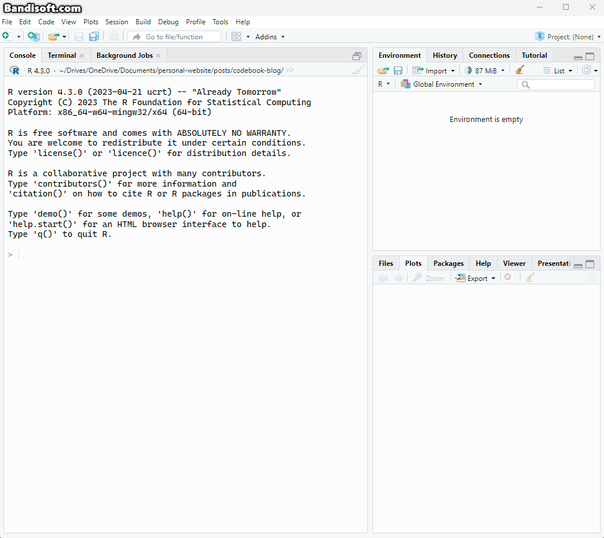
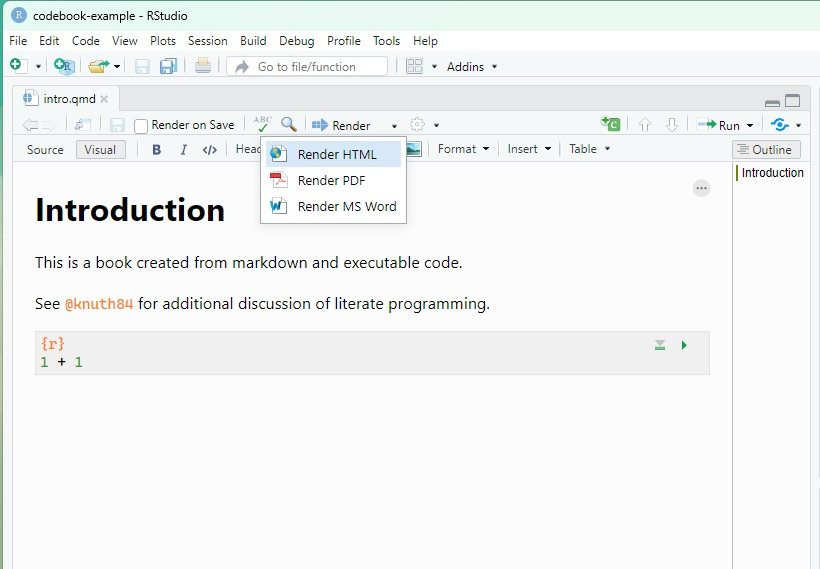
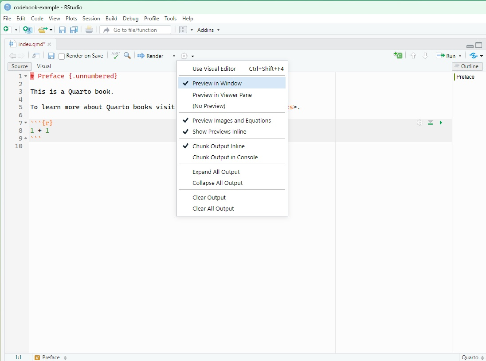

format:
html:
theme: cosmo
pdf:
documentclass: scrreprt
docx: # this adds .docx output format
toc: true # this enables table of contents
number-sections: true # this enables section numberingCreating a Data Codebook in Quarto
Tutorial
Quarto
Code
Open Science
A step by step guide on how to create a codebook for your dataset
What is a codebook and why do i need one?
Codebooks (or data dictionaries) are the documentation for your data. At the very minimum they contain the definitions of your variables, and at best they include additional information such as question text, response scales, and variable coding schemes.
In this brief guide I will go through how and why you might want to create a codebook, hopefully showing how simple it is. We will do this using Quarto in RStudio, allowing us to have both offline (PDF) and online versions of the same document. All of this can be done in VS Code or other platforms and the Quarto documentation has you covered there (see links below).
For simple datasets a single page document might be fine, but for more complex datasets with nontrivial coding schemes more clear documentation is helpful.
For you
It’s very easy to wax lyrical about the importance of open data and its key role in improving psychological and other sciences hit by recent crises, and i’ll do that in the next section, but perhaps the biggest beneficiary of good documentation will be you!
When we’re working on projects we are often so deep into what we’re doing that forgetting some important information is inconceivable, but in a few years you want to be able to understand your work just as well. Keeping clear documentation of exactly what you did to end up with the datafile you have allows you to jump right back in without the befuddlement of trying to interpret the variable names created by your former self.
For Science!
Open science is better science, well at the very least it is not worse science. Whether someone will ever actually look at your data is an open question but if they do you want them to be able to interpret what is going on. You never know, they might find something really cool. This is not a blog on open science or the benefits of data sharing, they have been written a million times by folks more knowledgable than me, but here are two of the key reasons, in my opinion, that having open data (and a codebook!) are good for science.
It’s transparent. If we are sharing some or other conclusion based on data it is only fair that people are able to scrutinise that conclusion. Without the ability to actually look at the data we are taking authors’ conclusions on faith, which given recent scandals in the sciences, is not as easy as it once was. It’s less about policing, and more about being able to stand up and say “hey, don’t take my word for it, here is the data”.
Having your data available makes it accessible to other scholars and members of the public who may want to build upon it. We all have our own worldviews, interests and skills and someone might have a take on your work you had never even considered. This can lead to innovation and possible collaboration. It also allows folks who may not have the luxury of funding systems that allow the collection of large and high quality data sets, yet again possibly fostering innovation and collaboration.
Science is a collective effort, and open, interpretable data fosters this.
Making a codebook in Quarto
What is Quarto?
Quarto is great. It was made by the folks over at Posit (who make RStudio) and provides a singe ecosystem for your coding notebooks, websites, presentations, along with books and other documents.
Installing it is super easy and an installation guide can be found here. I’ll be using RStudio for this example but all of this can also be done using other tools (i made my codebook for my current project in VS Code) and these are also covered in the above link.
Setting up a Quarto book
To get started we will need to create a project. If you have not used projects before they are a nice tidy way to keep related files collected together in their own directory.
We will use the Quarto Book format and to create one you go to:
File -> New Project… -> New Diectory -> Quarto Book
You can then choose the folder name for your directory, and where you want it to be stored. If you use renv and/or git you can tick those options, but they’re not needed to make it work.

This will create your project and generate some files for you:
_quarto.yml - this is the main settings and contents page for your codebook.
index.qmd - this and the other .qmd files are the different pages of your codebook
references.bib is the bibliography file for any references you might want to include.
We already have everything we need to to make our book! We will make one quick change here and then you can now see what this looks like without any further input.
in _quarto.yml we will update the format section to include word document, so it should look like this (without my comments):
We can now see what this document and a PDF would look like! You can do this by clicking the dropdown in RStudio:

or by running the following in the terminal (not the R console, the other tab!). This will create a _book folder in your directory in which you can see PDF and a .doc file of your book:
quarto renderand we can preview the web version would look like by running the following:
quarto previewYou can choose whether it renders the website in the RStudio viewer pane, or an external window (e.g. browser). To do this just click ther cog icon:

What’s going in our codebook?
At the very minimum a codebook should have the following: